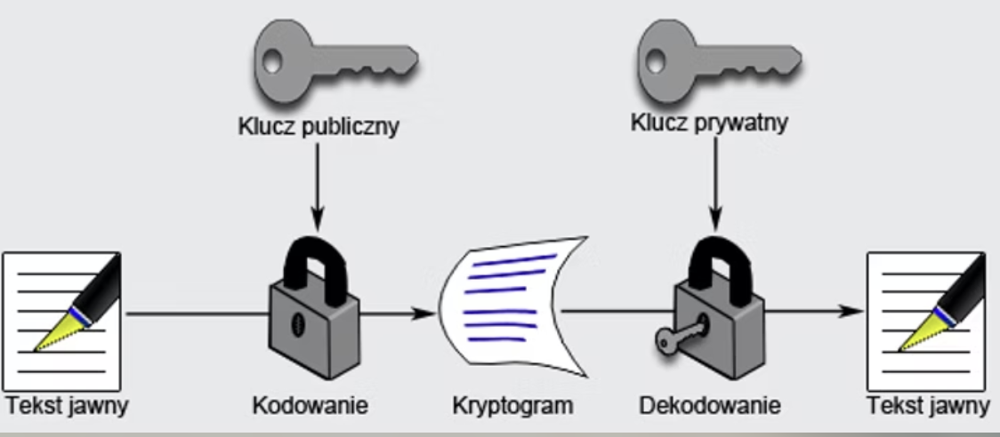

Kurs Git
System kontroli wersji
Od podstaw do zaawansowanych technik
Moduł 0: Wprowadzenie
Dlaczego potrzebujemy Git?
Problem, który Git rozwiązuje
- 📁 Chaos w wersjach plików:
projekt_final.txt,projekt_final_v2.txt,projekt_final_NAPRAWDE_final.txt - 👥 Praca zespołowa - konflikty przy edycji tego samego pliku
- 🔄 Brak historii zmian - kto, kiedy i dlaczego coś zmienił?
- 💾 Trudność w cofaniu się do wcześniejszych wersji
- 🔀 Niemożność równoległej pracy nad różnymi funkcjonalnościami
Instalacja Git
Linux (Ubuntu/Debian)
sudo apt-get update
sudo apt-get install gitmacOS
brew install git
# lub używając Xcode Command Line Tools
xcode-select --installKonfiguracja globalna
Pierwsza konfiguracja Git - identyfikacja użytkownika
# Ustaw swoją nazwę użytkownika
git config --global user.name "Jan Kowalski"
# Ustaw swój email
git config --global user.email "jan.kowalski@example.com"
# Sprawdź konfigurację
git config --listSSH vs HTTPS
HTTPS
- ✅ Łatwiejsza konfiguracja
- ✅ Działa wszędzie (firewalle)
- ⚠️ Wymaga logowania (lub tokena)
git clone https://github.com/user/repo.gitSSH
- ✅ Brak potrzeby logowania
- ✅ Wygodniejsze dla codziennej pracy
- ⚠️ Wymaga konfiguracji kluczy
git clone git@github.com:user/repo.gitRekomendacja: SSH dla codziennej pracy
Konfiguracja SSH dla GitHub
Plik ~/.ssh/config - automatyczne używanie właściwego klucza
# Utwórz lub edytuj plik ~/.ssh/config
nano ~/.ssh/configHost github.com
AddKeysToAgent yes
UseKeychain yes
IdentityFile ~/.ssh/id_rsa_github💡 Co to robi:
AddKeysToAgent yes- automatycznie dodaje klucz do ssh-agentUseKeychain yes- przechowuje hasło w macOS Keychain (tylko macOS)IdentityFile- wskazuje który klucz SSH użyć dla GitHub
🔑 Teraz Git automatycznie użyje tego klucza dla github.com!
Generowanie klucza SSH
Kryptografia asymetryczna - para kluczy: prywatny + publiczny
Generowanie
# Wygeneruj parę kluczy SSH
ssh-keygen -t ed25519 -C "twoj.email@example.com"
# Gdzie zapisać? (Enter = domyślnie)
# ~/.ssh/id_ed25519
# Ustaw hasło (opcjonalnie, ale zalecane!)
# Utworzone pliki:
# id_ed25519 - klucz PRYWATNY ⛔
# id_ed25519.pub - klucz PUBLICZNY ✅Dodawanie do GitHub
# 1. Skopiuj klucz PUBLICZNY
cat ~/.ssh/id_ed25519.pub
# 2. GitHub → Settings → SSH Keys
# 3. Wklej klucz publiczny
# 4. Testuj połączenie
ssh -T git@github.com
⚠️ NIGDY nie udostępniaj klucza PRYWATNEGO! Tylko publiczny (.pub) dodajesz do GitHub/GitLab!
Moduł 1: Podstawowy cykl pracy
Pierwsze kroki z Git
Tworzenie repozytorium
git init
Tworzy nowe repo
mkdir my-project
cd my-project
git initgit clone
Kopiuje istniejące repo
git clone https://github.com/user/repo.git
# lub z inną nazwą folderu
git clone https://github.com/user/repo.git my-folderCztery obszary w Git

- Working Directory - twoje pliki robocze
- Staging Area (Index) - przygotowanie do commita
- Local Repository - lokalna historia commitów
- Remote Repository - zdalne repo (GitHub/GitLab)
Podstawowe komendy
# Sprawdź status repozytorium
git status
# Dodaj plik do staging area
git add plik.txt
# Dodaj wszystkie zmienione pliki
git add .
# Utwórz commit
git commit -m "Opis zmian"
# Skrót: add + commit dla zmienionych plików
git commit -am "Opis zmian"Conventional Commits
Konwencja nazywania commitów dla lepszej czytelności
feat: dodanie nowej funkcjonalności
fix: naprawa błędu
docs: zmiany w dokumentacji
style: formatowanie kodu (bez zmian logiki)
refactor: refaktoryzacja kodu
test: dodanie lub modyfikacja testów
chore: zmiany w konfiguracji, narzędziachPrzykłady:
feat: add user authentication
fix: resolve login timeout issue
docs: update README with installation stepsPraktyka: Pierwszy projekt
# 1. Utwórz nowe repozytorium
mkdir notatnik
cd notatnik
git init
# 2. Utwórz pliki
echo "# Mój Notatnik" > README.md
echo "print('Hello, Git!')" > hello.py
# 3. Sprawdź status (przed dodaniem)
git status
# On branch main
# Untracked files:
# README.md
# hello.py
# 4. Dodaj pliki do staging area
git add .
# 5. Sprawdź status (po dodaniu)
git status
# On branch main
# Changes to be committed:
# new file: README.md
# new file: hello.py
# 6. Utwórz commit
git commit -m "feat: initial project setup"
# 7. Sprawdź status (po commit)
git status
# On branch main
# nothing to commit, working tree cleanModuł 2: Poruszanie się w historii
Przeglądanie i analiza zmian
git log - Historia commitów
# Podstawowy log
git log
# Kompaktowy widok
git log --oneline
# Z grafem gałęzi
git log --oneline --graph --decorate
# Z ostatnimi N commitami
git log -n 5
# Z datami
git log --pretty=format:"%h - %an, %ar : %s"git show - Szczegóły commita
# Pokaż ostatni commit
git show
# Pokaż konkretny commit
git show abc1234
# Pokaż konkretny plik z commita
git show abc1234:plik.txt
# Pokaż zmiany w konkretnym pliku
git show HEAD:README.mdgit diff - Porównywanie zmian
# Zmiany w working directory (niestaged)
git diff
# Zmiany w staging area
git diff --staged
# lub
git diff --cached
# Różnice między commitami
git diff abc1234 def5678
# Różnice w konkretnym pliku
git diff HEAD README.md
# Statystyki zmian
git diff --statTagowanie wersji
Oznaczanie ważnych punktów w historii (np. release)
# Lightweight tag
git tag v1.0.0
# Annotated tag (z metadanymi)
git tag -a v1.0.0 -m "Pierwsza stabilna wersja"
# Lista tagów
git tag
# Szczegóły taga
git show v1.0.0
# Tagowanie starszego commita
git tag -a v0.9.0 abc1234 -m "Beta version"
# Wysłanie tagów na remote
git push origin v1.0.0
git push origin --tagsModuł 3: .gitignore i ignorowanie plików
Ochrona wrażliwych danych i porządek w repo
.gitignore - Ignorowanie plików
Pliki i foldery, które Git ma pomijać
# Przykładowy .gitignore
# Zależności (virtual environment Python)
venv/
# Pliki IDE (Visual Studio Code)
.vscode/
# Pliki konfiguracyjne z sekretami
.env
credentials.json💡 Można robić bardziej skomplikowane wzorce (*.log, **/*.pyc, !important.log), ale wystarczy o to ChatGPT poprosić
Generator: gitignore.io
Praktyka: .gitignore z credentials
⚠️ Nigdy nie commituj plików z hasłami i kluczami API!
# 1. Utwórz plik z wrażliwymi danymi
echo '{"api_key": "secret123", "password": "admin"}' > credentials.json
# 2. Sprawdź status
git statusUntracked files:
(use "git add <file>..." to include in what will be committed)
credentials.json
# 3. Utwórz .gitignore
echo "credentials.json" > .gitignore
# 4. Sprawdź status ponownie
git statusUntracked files:
(use "git add <file>..." to include in what will be committed)
.gitignore
# 5. Dodaj .gitignore do repo (ale NIE credentials.json!)
git add .gitignore
git commit -m "chore: add .gitignore for credentials"✅ Teraz credentials.json jest bezpiecznie zignorowany przez Git
Moduł 4: Praca z gałęziami
Równoległa praca nad funkcjonalnościami
Koncepcja branchy
Branch = wskaźnik do commita

- Lekkie i szybkie (tylko wskaźnik)
- Umożliwiają równoległą pracę
- Izolują zmiany od głównego kodu
- Główna gałąź:
mainlubmaster
Operacje na gałęziach
# Wyświetl gałęzie
git branch
# Utwórz nową gałąź
git branch feature-login
# Przełącz się na gałąź
git switch feature-login
# lub (starszy sposób)
git checkout feature-login
# Utwórz i przełącz się (skrót)
git switch -c feature-login
# lub
git checkout -b feature-login
# Usuń gałąź
git branch -d feature-login
# Wymuś usunięcie (niescalone zmiany)
git branch -D feature-logingit merge - Scalanie gałęzi
Fast-forward
Brak nowych commitów na głównej gałęzi
git switch main
git merge feature-login
True merge (3-way)
Nowe commity na obu gałęziach
git switch main
git merge feature-login
Konfllikty merge
Gdy Git nie może automatycznie scalić zmian
# Podczas merge pojawia się konflikt
git merge feature-login
# Auto-merging file.txt
# CONFLICT (content): Merge conflict in file.txt
# Plik z konfliktem wygląda tak:
<<<<<<< HEAD
Zmiana z głównej gałęzi
=======
Zmiana z feature branch
>>>>>>> feature-login
# 1. Edytuj plik i rozwiąż konflikt
# 2. Dodaj rozwiązane pliki
git add file.txt
# 3. Dokończ merge
git commitĆwiczenie: Feature branch
# 1. Utwórz nową gałąź dla funkcjonalności
git switch -c feature-user-profile
# 2. Wprowadź zmiany
echo "def get_user_profile(): pass" >> user.py
git add user.py
git commit -m "feat: add user profile function"
# 3. Wróć na main
git switch main
# 4. Scal zmiany
git merge feature-user-profile
# 5. Usuń niepotrzebną gałąź
git branch -d feature-user-profileModuł 5: Zdalne repozytoria
Współpraca przez GitHub/GitLab
git remote - Zarządzanie zdalnymi repozytoriami
# Dodaj zdalne repozytorium
git remote add origin https://github.com/user/repo.git
# Wyświetl zdalne repozytoria
git remote -v
# Zmień URL zdalnego repo
git remote set-url origin git@github.com:user/repo.git
# Usuń zdalne repo
git remote remove origin
# Zmień nazwę
git remote rename origin upstreamPush, Fetch, Pull
# PUSH - wyślij lokalne zmiany na remote
git push origin main
# Ustaw tracking dla gałęzi
git push -u origin feature-login
# FETCH - pobierz zmiany (bez merge)
git fetch origin
# PULL - pobierz i scal zmiany (fetch + merge)
git pull origin main
# Pull z rebase zamiast merge
git pull --rebase origin mainFork vs Clone
Clone
- Kopiuje repo lokalnie
- Bezpośredni dostęp do oryginalnego repo
- Wymaga uprawnień do push
- Dla projektów zespołowych
git clone https://github.com/team/project.gitFork
- Tworzy kopię repo na Twoim koncie
- Niezależna kopia na GitHub/GitLab
- Pełna kontrola nad swoją kopią
- Dla projektów open source
# Fork przez interfejs GitHub
# Potem clone swojej kopii
git clone https://github.com/YOU/project.gitPull Request (PR) / Merge Request (MR)
Sposób na wniesienie zmian do projektu
- Utwórz branch dla swojej funkcjonalności
- Wprowadź zmiany i commituj
- Push na remote
- Otwórz PR/MR przez interfejs GitHub/GitLab
- Code Review - inni sprawdzają kod
- Status Checks - automatyczne testy, lintery
- Merge - po akceptacji
🎯 Dobry PR: mały, skupiony, z jasnym opisem, przechodzi testy
Przykład: Duże repozytorium Open Source
Jak wyglądają PR/MR w prawdziwych projektach
Przykładowe repozytoria do zbadania:
- 🐍 Python: github.com/python/cpython
- ⚛️ React: github.com/facebook/react
- 🦀 Rust: github.com/rust-lang/rust
- 🐧 Linux: github.com/torvalds/linux
- 🤖 Robocorp (submodules): github.com/robocorp/example-use-git-submodule-for-shared-code
- 🐍 Python Repo: github.com/kennethreitz/python-guide
Co zauważyć:
- Szczegółowe opisy PR z motywacją zmian
- Testy automatyczne (CI/CD) - muszą przejść
- Code review - kilka osób sprawdza kod
- Dyskusje w komentarzach
- Labels (bug, enhancement, documentation)
- Link do Issue, które PR rozwiązuje
Branch Protection Rules
Ochrona głównych gałęzi (GitHub/GitLab settings)
- ✅ Require pull request reviews - wymagaj akceptacji przed merge
- ✅ Require status checks - testy muszą przejść
- ✅ Require branches to be up to date - branch musi być zaktualizowany
- ✅ Require linear history - zakaż merge commitów
- ✅ Include administrators - zasady dotyczą też adminów
- 🚫 Restrict push - tylko wybrane osoby mogą pushować
Branch Protection - Ochrona głównej gałęzi
Zabezpiecz main przed przypadkowym pushem (GitHub/GitLab)
GitHub Settings → Branches → Add rule:
- ✅ Branch name pattern:
main - ✅ Require pull request before merging
- ✅ Require approvals (1 lub więcej)
- ✅ Require status checks to pass
- ✅ Do not allow bypassing (nawet dla adminów)
GitLab Settings → Repository → Protected Branches:
- Branch:
main - Allowed to merge: Maintainers
- Allowed to push: No one
🛡️ Teraz nikt (nawet Ty) nie może bezpośrednio pushować do main!
Workflow z PR
# 1. Utwórz feature branch
git switch -c feature-new-api
# 2. Wprowadź zmiany i commituj
git add .
git commit -m "feat: implement new API endpoint"
# 3. Push do remote
git push -u origin feature-new-api
# 4. Na GitHub/GitLab: utwórz Pull Request
# 5. Code review, testy, poprawki...
# 6. Po akceptacji: merge przez interfejs
# 7. Lokalnie: zaktualizuj main i usuń branch
git switch main
git pull origin main
git branch -d feature-new-apiModuł 6: Cofanie i naprawianie
Jak naprawić błędy w Git
git checkout - Cofanie do commita
Najpierw sprawdź historię commitów:
git log --onelinee4f5g6h
i7j8k9l
m0n1o2p
# Cofnij zmiany do ostatniego commita (HEAD)
git checkout HEAD plik.txt
# Cofnij do konkretnego commita (użyj SHA z git log)
git checkout e4f5g6h plik.txt
# Cofnij wszystkie pliki
git checkout HEAD .
# Nowa składnia (preferowana)
git restore plik.txt
git restore --source=e4f5g6h plik.txt⚠️ Uwaga: Traci niezapisane zmiany!
Staging Area - Dodawanie plików
Zobaczmy jak działa staging area
# 1. Zmodyfikuj pliki
echo "new code" >> app.py
echo "new config" >> config.json
# 2. Sprawdź status (przed dodaniem)
git statusChanges not staged for commit:
(use "git add <file>..." to update what will be committed)
modified: app.py
modified: config.json
# 3. Dodaj do staging
git add .
# 4. Sprawdź status (po dodaniu)
git statusChanges to be committed:
(use "git restore --staged <file>..." to unstage)
modified: app.py
modified: config.json
git reset HEAD - Usuwanie ze staging
Cofnij pliki ze staging area (zmiany w plikach pozostają!)
# Status przed reset (pliki w staging)
git statusChanges to be committed:
(use "git restore --staged <file>..." to unstage)
modified: app.py
modified: config.json
# Usuń jeden plik ze staging
git reset HEAD app.py
# Sprawdź status (po reset)
git statusChanges to be committed:
modified: config.json
Changes not staged for commit:
(use "git add <file>..." to update what will be committed)
modified: app.py
# Nowa składnia (preferowana)
git restore --staged app.py💡 Zmiany w plikach pozostają, tylko staging area jest czyszczony
git reset --hard
Cofnij commity i usuń wszystkie zmiany
# Cofnij do poprzedniego commita (traci zmiany!)
git reset --hard HEAD~1
# Cofnij do konkretnego commita
git reset --hard abc1234
# Cofnij wszystkie lokalne zmiany
git reset --hard HEAD⚠️ UWAGA: Bezpowrotnie usuwa zmiany!
🚫 Nigdy nie używaj na publicznych commitach (po push)
Rodzaje reset
| Komenda | Working Directory | Staging Area | Commits |
|---|---|---|---|
git reset --soft |
Zachowane | Zachowane | Cofnięte |
git reset --mixed (domyślny) |
Zachowane | Wyczyszczone | Cofnięte |
git reset --hard |
Wyczyszczone | Wyczyszczone | Cofnięte |
Inne przydatne komendy
# Popraw ostatni commit (zmień wiadomość lub dodaj pliki)
git commit --amend
# Usuń ostatni commit, ale zachowaj zmiany
git reset --soft HEAD~1
# Cofnij merge
git merge --abortModuł 7: Dodatkowo
Zaawansowane techniki (jeśli starczy czasu)
Pre-commit Hooks
Automatyczne sprawdzenia przed commitem
# Instalacja pre-commit (Python)
pip install pre-commit
# Konfiguracja: .pre-commit-config.yaml
repos:
- repo: https://github.com/pre-commit/pre-commit-hooks
rev: v4.4.0
hooks:
- id: trailing-whitespace
- id: end-of-file-fixer
- id: check-yaml
- id: check-added-large-files
# Instalacja hooków
pre-commit install
# Teraz przy każdym commit automatycznie uruchomią się sprawdzenia!Git Submodules
Zarządzanie zależnościami jako repozytoriami
# Dodaj submoduł
git submodule add https://github.com/user/library.git libs/library
# Clone repo z submodułami
git clone --recursive https://github.com/user/project.git
# Lub po clone:
git submodule init
git submodule update
# Aktualizuj submoduły
git submodule update --remote
# Usuń submoduł
git submodule deinit libs/library
git rm libs/library💡 Alternatywa: package managers - instalacja bezpośrednio z Git repo
# Python (pip)
pip install git+https://github.com/user/library.git
# Node.js (npm)
npm install git+https://github.com/user/library.git
# Rust (Cargo.toml)
[dependencies]
library = { git = "https://github.com/user/library.git" }📚 Przykład użycia submodules: robocorp/example-use-git-submodule-for-shared-code
git stash - Tymczasowe schowanie zmian
Przydatne gdy musisz szybko zmienić branch, ale nie chcesz commitować
# Schowaj zmiany z nazwą (zalecane!)
git stash push -m "work in progress on feature X"
# Zobacz listę schowanych zmian
git stash list
# stash@{0}: On main: work in progress on feature X
# stash@{1}: On feature-login: debugging auth
# Przywróć konkretny stash
git stash apply stash@{0}
# Przywróć i usuń z listy
git stash pop stash@{0}
# Usuń stash
git stash drop stash@{0}💡 Alternatywa: git worktree - pozwala pracować na wielu branch'ach jednocześnie w osobnych folderach (zaawansowane)
git cherry-pick - Przeniesienie commita
Skopiuj konkretny commit z innej gałęzi
# Sytuacja: masz commit abc1234 na gałęzi feature,
# ale chcesz go mieć też na main
# 1. Znajdź hash commita (np. z git log)
git log --oneline feature
# abc1234 fix: naprawiono krytyczny bug
# 2. Przełącz się na gałąź docelową
git switch main
# 3. Cherry-pick konkretnego commita
git cherry-pick abc1234
# Commit został skopiowany na main!git blame - Kto zmienił kod?
Sprawdź kto i kiedy modyfikował każdą linię
# Zobacz autora każdej linii w pliku
git blame app.py
# Output:
# abc12345 (Jan Kowalski 2024-01-15 10:30:00) def calculate():
# def56789 (Anna Nowak 2024-02-20 14:45:00) result = x + y
# ghi01234 (Jan Kowalski 2024-03-01 09:15:00) return result
# Pokaż tylko linie 10-20
git blame -L 10,20 app.py
# Ignoruj zmiany białych znaków
git blame -w app.py💡 Przydatne gdy szukasz autora konkretnego kodu lub bug
🔧 W VS Code: Możesz użyć dodatku GitLens - pokazuje autora w każdej linii kodu bez komend!
Git Aliases - Skróty komend
Stwórz własne skróty dla często używanych komend
# Utwórz alias dla git status
git config --global alias.st status
# Teraz możesz użyć:
git st
# zamiast: git status
# Więcej przydatnych aliasów:
git config --global alias.co checkout
git config --global alias.br branch
git config --global alias.ci commit
git config --global alias.last 'log -1 HEAD'
git config --global alias.unstage 'reset HEAD --'
# Przykłady użycia:
git co main # git checkout main
git br # git branch
git last # git log -1 HEAD
git unstage file.txt # git reset HEAD -- file.txtgit rm - Usuwanie plików z repo
Usuń plik z repozytorium Git
# Usuń plik z repo i working directory
git rm file.txt
git commit -m "chore: remove file.txt"
# Usuń tylko z repo, ale zostaw lokalnie
git rm --cached file.txt
git commit -m "chore: stop tracking file.txt"
# Przydatne gdy przypadkowo dodałeś .env do repo:
git rm --cached .env
echo ".env" >> .gitignore
git add .gitignore
git commit -m "chore: remove .env from tracking"
# Usuń cały folder
git rm -r old_folder/
git commit -m "chore: remove old folder"Inne przydatne narzędzia
- GitHub Actions / GitLab CI - automatyzacja testów i deploymentu
Git Cheat Sheet
Najważniejsze komendy
Konfiguracja i tworzenie
git config --global user.name "Name" |
Ustaw nazwę użytkownika |
git config --global user.email "email" |
Ustaw email |
git init |
Utwórz nowe repozytorium |
git clone <url> |
Sklonuj istniejące repozytorium |
Podstawowe operacje
git status |
Sprawdź status plików |
git add <file> |
Dodaj plik do staging |
git add . |
Dodaj wszystkie zmienione pliki |
git commit -m "message" |
Utwórz commit |
git commit -am "message" |
Add + commit (tylko zmienione) |
git commit --amend |
Popraw ostatni commit |
Gałęzie (Branches)
git branch |
Lista gałęzi |
git branch <name> |
Utwórz nową gałąź |
git switch <branch> |
Przełącz się na gałąź |
git switch -c <branch> |
Utwórz i przełącz na gałąź |
git merge <branch> |
Scal gałąź z bieżącą |
git branch -d <branch> |
Usuń gałąź |
Historia i różnice
git log |
Pokaż historię commitów |
git log --oneline --graph |
Kompaktowy log z grafem |
git show <commit> |
Pokaż szczegóły commita |
git diff |
Różnice w working directory |
git diff --staged |
Różnice w staging area |
git diff <commit1> <commit2> |
Różnice między commitami |
Zdalne repozytoria
git remote add origin <url> |
Dodaj zdalne repo |
git remote -v |
Lista zdalnych repo |
git push origin <branch> |
Wyślij zmiany na remote |
git push -u origin <branch> |
Push z ustawieniem tracking |
git fetch |
Pobierz zmiany (bez merge) |
git pull |
Pobierz i scal zmiany |
Cofanie i naprawianie
git restore <file> |
Cofnij zmiany w pliku |
git restore --staged <file> |
Usuń plik ze staging |
git reset HEAD~1 |
Cofnij ostatni commit (zachowaj zmiany) |
git reset --hard HEAD~1 |
Cofnij commit i usuń zmiany |
git revert <commit> |
Cofnij commit (nowy commit) |
git reflog |
Historia wszystkich operacji |
Przydatne dodatki
git stash |
Schowaj zmiany tymczasowo |
git stash pop |
Przywróć schowane zmiany |
git tag <name> |
Utwórz tag |
git tag -a <name> -m "msg" |
Utwórz annotated tag |
git cherry-pick <commit> |
Przenieś konkretny commit |
git blame <file> |
Kto zmienił każdą linię |
Dziękuję!
Pytania?
📚 Materiały dodatkowe: